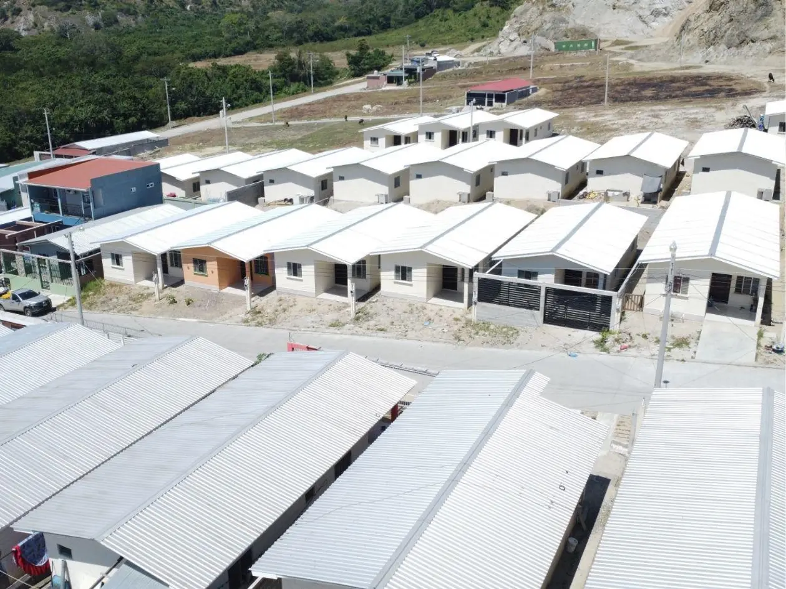

Julio Velarde en CADE 2026: "La izquierda en el Perú no asusta a nadie"
Redacción Política | 26 Noviembre 2026

El presidente del Banco Central de Reserva del Perú (BCRP), Julio Velarde, participó en el foro CADE 2026, donde contrastó la situación política del Perú con la de otros países de la región, apuntando hacia una mayor estabilidad económica.
Durante su intervención, Velarde repasó el golpe de los combustibles y el fenómeno de El Niño en los precios, el avance de la inversión y las fallas de la gestión pública. "La izquierda en el Perú no asusta a nadie", sentenció ante los empresarios presentes.
Keiko Fujimori sorprende en CADE 2026 con propuestas para la reactivación económica
Sección Política | 26 Noviembre 2026

La lideresa política presentó un plan enfocado en la inversión privada y la generación de empleo formal durante su ponencia en el evento empresarial más importante del país, generando diversas reacciones en el sector.
Expertos señalan que sus propuestas buscan dinamizar sectores clave como la minería y la agricultura, aunque advierten que será crucial el diálogo con el Ejecutivo para sacar adelante las reformas necesarias.